Jun 7, 2025 · echolalia, ghostlings +4
Jun 7, 2025 · echolalia, ghostlings +4
flyer wall
 Jun 4, 2025 · haywire, no guard +3
Jun 4, 2025 · haywire, no guard +3 May 31, 2025 · fatejacket, conflict of interest +10May 24, 2025 · indobeats, skiz +4May 17, 2025 · on2logic, jigglypuff +3
May 31, 2025 · fatejacket, conflict of interest +10May 24, 2025 · indobeats, skiz +4May 17, 2025 · on2logic, jigglypuff +3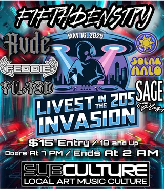
May 16, 2025 · fifth density, rvde +4 Apr 23, 2025 · wielded steel, laid out +3
Apr 23, 2025 · wielded steel, laid out +3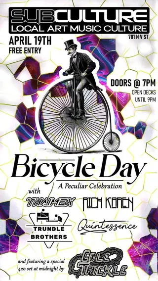
Apr 19, 2025 · thaimex, rich karen +3 Apr 18, 2025 · safety training, ghostlings +2
Apr 18, 2025 · safety training, ghostlings +2 Apr 4, 2025 · fathom, godeater +2
Apr 4, 2025 · fathom, godeater +2 Apr 1, 2025 · farseek, mourning glories +2
Apr 1, 2025 · farseek, mourning glories +2 Mar 28, 2025 · lesion, infernem +6
Mar 28, 2025 · lesion, infernem +6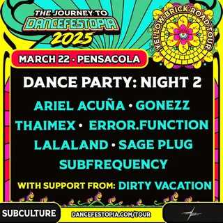
Mar 22, 2025 · ariel acuña, gonezz +6 Mar 21, 2025 · bt wubz, cam the sella +8
Mar 21, 2025 · bt wubz, cam the sella +8 Mar 1, 2025 · infernal racket, hypnoz +3
Mar 1, 2025 · infernal racket, hypnoz +3 Feb 22, 2025 · skiz, liquid l +2Feb 8, 2025 · rohan solo, jamr +3
Feb 22, 2025 · skiz, liquid l +2Feb 8, 2025 · rohan solo, jamr +3 Feb 1, 2025 · fatejacket, chasses +2
Feb 1, 2025 · fatejacket, chasses +2 Jan 31, 2025 · lvvrs, mourning glories +1
Jan 31, 2025 · lvvrs, mourning glories +1 Jan 25, 2025 · burn absolute, coma waves +2Jan 24, 2025 · lost wandering, noxious +2
Jan 25, 2025 · burn absolute, coma waves +2Jan 24, 2025 · lost wandering, noxious +2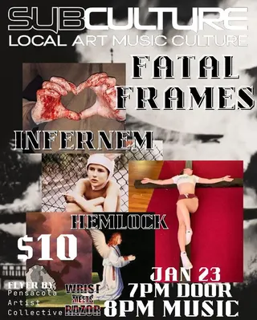
Jan 23, 2025 · fatal frames, infernem +1 Jan 18, 2025 · basura, delicate chaos +3Jan 11, 2025 · t1lt3d, motiv8 +2
Jan 18, 2025 · basura, delicate chaos +3Jan 11, 2025 · t1lt3d, motiv8 +2 Dec 31, 2024 · zeplinn, dovee +3
Dec 31, 2024 · zeplinn, dovee +3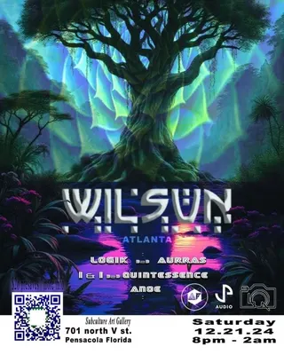
Dec 21, 2024 · wilsun, logik +4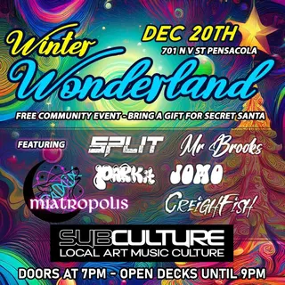
Dec 20, 2024 · miatropolis, split +4 Dec 13, 2024 · hemlock, post apocalyptic murder monkeys +2
Dec 13, 2024 · hemlock, post apocalyptic murder monkeys +2 Dec 7, 2024 · anoe, bowser +11
Dec 7, 2024 · anoe, bowser +11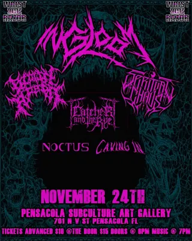
Nov 24, 2024 · in gloom, spiritual chaos +4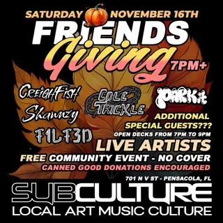
Nov 16, 2024 · creighfish, cole trickle +3 Nov 13, 2024 · peacemaker, realms of death +2
Nov 13, 2024 · peacemaker, realms of death +2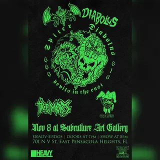
Nov 8, 2024 · spiter, diabolus +2 Nov 3, 2024 · stay lost, ritual killer +1
Nov 3, 2024 · stay lost, ritual killer +1 Nov 1, 2024 · curses, burn absolute +4Oct 31, 2024 · reign of z, bullet to the heart +2
Nov 1, 2024 · curses, burn absolute +4Oct 31, 2024 · reign of z, bullet to the heart +2 Oct 18, 2024 · split in two, no surrender +1
Oct 18, 2024 · split in two, no surrender +1 Oct 15, 2024 · dummy pass, color the void +3Oct 11, 2024 · soulacybin, pathwey +3
Oct 15, 2024 · dummy pass, color the void +3Oct 11, 2024 · soulacybin, pathwey +3 Sep 21, 2024 · meadows, i am terrified +2
Sep 21, 2024 · meadows, i am terrified +2 Sep 14, 2024 · common creation, slzrd +4
Sep 14, 2024 · common creation, slzrd +4 Aug 23, 2024 · yosemite in black, gutcheck +2
Aug 23, 2024 · yosemite in black, gutcheck +2 Aug 16, 2024 · fatejacket, storage 24 +1
Aug 16, 2024 · fatejacket, storage 24 +1 Aug 15, 2024 · darius, charlie-b +3Aug 9, 2024 · darius, mister brooks +3Aug 2, 2024 · park it, selapack +6
Aug 15, 2024 · darius, charlie-b +3Aug 9, 2024 · darius, mister brooks +3Aug 2, 2024 · park it, selapack +6 Jul 27, 2024 · rafeeki, sunken frequencies +3
Jul 27, 2024 · rafeeki, sunken frequencies +3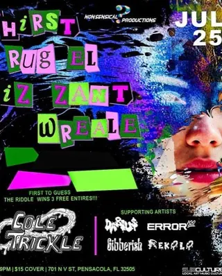
Jul 25, 2024 · cole trickle, darius +3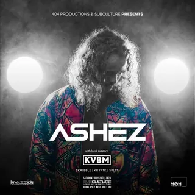
Jul 20, 2024 · ashez, kvbm +3 Jul 12, 2024 · broke florida boys, stinky pete +11
Jul 12, 2024 · broke florida boys, stinky pete +11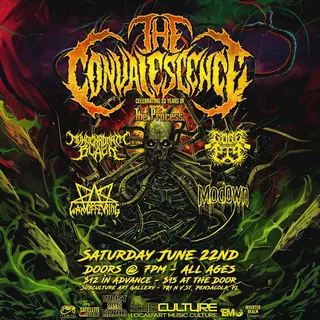
Jun 22, 2024 · the convalescence, monochromatic black +3 Jun 1, 2024 · outsider, pauper's grave +2
Jun 1, 2024 · outsider, pauper's grave +2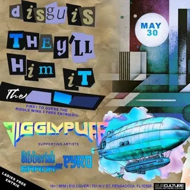
May 30, 2024 · jigglypuff, justin holtby +2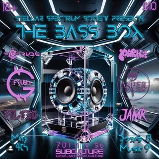
May 24, 2024 · t1lt3d, jamr +4 May 19, 2024 · fatejacket, fat jake +2
May 19, 2024 · fatejacket, fat jake +2 May 17, 2024 · spades, hypnoz +4May 16, 2024 · dallas nelson, maria tucker +3
May 17, 2024 · spades, hypnoz +4May 16, 2024 · dallas nelson, maria tucker +3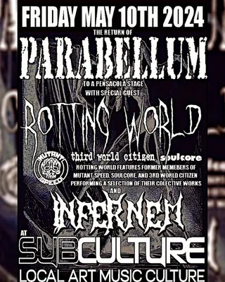
May 10, 2024 · parabellum, rotting world +1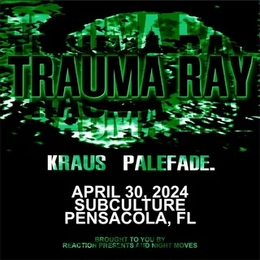
Apr 30, 2024 · trauma ray, kraus +1Apr 27, 2024 · bunting music, spicy ashaan +5 Apr 6, 2024 · tenet, outlook bleak +5Apr 4, 2024 · gale mzundastood, lamar defore +3
Apr 6, 2024 · tenet, outlook bleak +5Apr 4, 2024 · gale mzundastood, lamar defore +3 Mar 22, 2024 · fatejacket, serena's fire +2Mar 17, 2024 · decaying eucharist, ocean rot +3
Mar 22, 2024 · fatejacket, serena's fire +2Mar 17, 2024 · decaying eucharist, ocean rot +3 Mar 16, 2024 · cam the sella, lalaland +6
Mar 16, 2024 · cam the sella, lalaland +6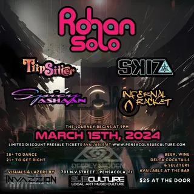
Mar 15, 2024 · rohan solo, tripsitter +3 Mar 8, 2024 · abstract module, cam the sella +6
Mar 8, 2024 · abstract module, cam the sella +6 Mar 2, 2024 · chat holley, white phosphorus +2
Mar 2, 2024 · chat holley, white phosphorus +2 Feb 10, 2024 · levitation jones, king joe +4
Feb 10, 2024 · levitation jones, king joe +4 Jan 20, 2024 · wax offering, rotted remains +2Jan 14, 2024 · milli x, rashawn stallworth +1
Jan 20, 2024 · wax offering, rotted remains +2Jan 14, 2024 · milli x, rashawn stallworth +1 Dec 13, 2023 · we are the asteroid, bangarang peter +3
Dec 13, 2023 · we are the asteroid, bangarang peter +3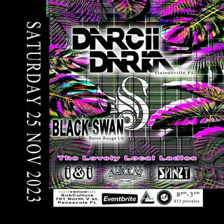
Nov 25, 2023 · darcii darka, black swan +3 Nov 18, 2023 · infernem, crow road +2
Nov 18, 2023 · infernem, crow road +2 Nov 17, 2023 · kirby bright, panda panax +3
Nov 17, 2023 · kirby bright, panda panax +3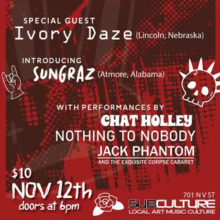
Nov 12, 2023 · ivory daze, sungraz +3 Nov 11, 2023 · white phosphorus, infernem +2
Nov 11, 2023 · white phosphorus, infernem +2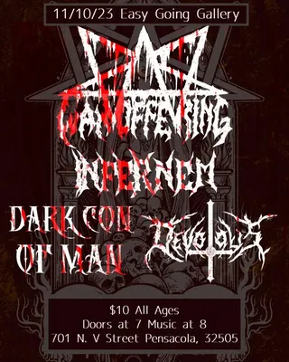
Nov 10, 2023 · wax offering, infernem +2Nov 3, 2023 · jl bhood, owney tk +2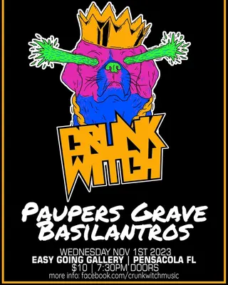
Nov 1, 2023 · crunk witch, pauper's grave +1 Oct 28, 2023 · ego death, aneurysm +2
Oct 28, 2023 · ego death, aneurysm +2 Oct 27, 2023 · no complications, slow degrade +3
Oct 27, 2023 · no complications, slow degrade +3 Oct 7, 2023 · delta, king joe +4
Oct 7, 2023 · delta, king joe +4 Sep 30, 2023 · jumping the gun, oni mask +2Sep 29, 2023 · urban development, infernal racket +2
Sep 30, 2023 · jumping the gun, oni mask +2Sep 29, 2023 · urban development, infernal racket +2 Sep 28, 2023 · capra, stay lost +3Sep 24, 2023 · ego death, hijas de la muerte +2
Sep 28, 2023 · capra, stay lost +3Sep 24, 2023 · ego death, hijas de la muerte +2 Sep 23, 2023 · infernem, aneurysm +3
Sep 23, 2023 · infernem, aneurysm +3past shows (114)
- 2025
- 7Jun 2025Echolalia, Ghostlings, Hemlock, Hemolacria, Hangnail Ripoff, Away Till Dusk
- 4Jun 2025Haywire, No Guard, Statement of Pride, Serrated, Command Voice
- 31May 2025Fatejacket, Conflict of Interest, Chasses, Broke Florida Boys, Lord Fish Face, Brax, D-Mo, Liyo Nasty, Sneauxmane, Downer850, Lesion, Suburban Boyz
- 24May 2025Indobeats, Skiz, Wasabi Jackson, Miatropolis, Yante, Lost Wandering
- 17May 2025On2logic, Jigglypuff, Molicious, Error Function, Infernal Racket
- 16May 2025Fifth Density, Rvde, Solar Halo, Feddie, T1lt3d, Sage Plug
- 23Apr 2025Wielded Steel, Laid Out, 7 Stitches, Spiral, Hangnail Ripoff
- 19Apr 2025Thaimex, Rich Karen, Trundle Brothers, Quintessence, Cole Trickle
- 18Apr 2025Safety Training, Ghostlings, Honor of Thieves, Conflict of Interest
- 4Apr 2025Fathom, Godeater, Exformation, Hemlock
- 1Apr 2025Farseek, Mourning Glories, Outlook Bleak, Conflict of Interest
- 28Mar 2025Lesion, Infernem, Hemolacria, Face of Relief, Selapack, Xenjay, Versye, Always Violent
- 22Mar 2025Ariel Acuña, Gonezz, Thaimex, Error Function, Lalaland, Sage Plug, Subfrequency, Dirty Vacation
- 21Mar 2025Bt Wubz, Cam the Sella, Chlopamine, Error 100, Hydyne, Ricky English, Philharmonik, Mvkk, Shawnzy, Loop Soop
- 1Mar 2025Infernal Racket, Hypnoz, Delicate Chaos, Shawnzy, T1lt3d
- 22Feb 2025Skiz, Liquid L, Spicy Ashaan, Yante
- 8Feb 2025Rohan Solo, Jamr, spank[y], Chlopamine, Tripsitter
- 1Feb 2025Fatejacket, Chasses, Orphic, Jupiter Pilot
- 31Jan 2025Lvvrs, Mourning Glories, Rockstar Girlfriend
- 25Jan 2025Burn Absolute, Coma Waves, Sleeptalker, Lesion
- 24Jan 2025Lost Wandering, Noxious, Brody, Spence B
- 23Jan 2025Fatal Frames, Infernem, Hemlock
- 18Jan 2025Basura, Delicate Chaos, Fifth Density, Spicy Ashaan, Infernal Racket
- 11Jan 2025T1lt3d, Motiv8, Error 100, Just Jordan
- 2024
- 31Dec 2024Zeplinn, Dovee, Skiz, Split, Cam the Sella
- 21Dec 2024Wilsun, Logik, Aurras, I & I, Quintessence, Anoe
- 20Dec 2024Miatropolis, Split, Mr Brooks, Park It, Jomo, Creighfish
- 13Dec 2024Hemlock, Post Apocalyptic Murder Monkeys, White Phosphorus, Mourning Glories
- 7Dec 2024Anoe, Bowser, Cam the Sella, Cole Trickle, Fifth Density, Hypnoz, Infernal Racket, Lost Wandering, Skiz, Skribble, Spicy Ashaan, Wub Control, Yante
- 24Nov 2024In Gloom, Spiritual Chaos, Catcher and the Rye, Blown Apart, Noctus, Caving In
- 16Nov 2024Creighfish, Cole Trickle, Park It, Shawnzy, T1lt3d
- 13Nov 2024Peacemaker, Realms of Death, No Surrender, Oinkliteration
- 8Nov 2024Spiter, Diabolus, Tremors, Chapter XIII
- 3Nov 2024Stay Lost, Ritual Killer, Scream Out Loud
- 1Nov 2024Curses, Burn Absolute, Chasing Airplanes, Afterdusk, Worthy of the Crown, Accursed Creator
- 31Oct 2024Reign of Z, Bullet to the Heart, Midnight Fracture, Honor of Thieves
- 19Oct 2024Infernal Racket, Birdz, Skribble, Rich Karen, Darius
- 18Oct 2024Split in Two, No Surrender, Exformation
- 17Oct 2024High, Mesopeak, Palmmeadow, White Phosphorus
- 15Oct 2024Dummy Pass, Color the Void, Ballastella, Outlook Bleak, Grave Chorus
- 11Oct 2024Soulacybin, Pathwey, Infernal Racket, Spicy Ashaan, spank[y]
- 4Oct 2024Skiz, Ari Atari, Motiv8, Rich Karen, Matty Ice, On2logic, Gonnor
- 27Sep 2024Doc Glock, Selapack, Xenjay, Slier, Nixe
- 26Sep 2024Bt Wubz, Ari Atari, Gibberish, Error, Birdz
- 21Sep 2024Meadows, I Am Terrified, Scream Out Loud, Accursed Creator
- 20Sep 2024Clarity, Birdz, Guapo, Mauricio
- 19Sep 2024Piiro, Cowboy Ron, Jigglypuff, Walter Ego, Motiv8
- 14Sep 2024Common Creation, SLZRD, Delicate Chaos, Tripsitter, Cole Trickle, Rich Karen
- 13Sep 2024Random Movement, Logik, Spinzy, Aurras, Quintessence, T1lt3d
- 7Sep 2024Levitation Jones, Mimic, Infernal Racket, Delicate Chaos
- 6Sep 2024Darius, Ari Atari, Wook of the West, JB, Mister Brooks
- 24Aug 2024Raket, Creighfish, Fifth Density, Cam the Sella, Walter Ego, T1lt3d, Motiv8
- 23Aug 2024Yosemite In Black, Gutcheck, Ultimatum, Victims of the System
- 16Aug 2024Fatejacket, Storage 24, Tremors
- 15Aug 2024Darius, Charlie-B, Ariel Acuña, Error, Bt Wubz
- 9Aug 2024Darius, Mister Brooks, JB, Error, Subskew
- 6Aug 2024No Cure, Spaced, Statement of Pride, Paid In Blood
- 2Aug 2024Park It, Selapack, Jamr, Slier, Motiv8, Matty Ice, Error, MXMXMXM
- 27Jul 2024Rafeeki, Sunken Frequencies, Panda Panax, Delicate Chaos, Infernal Racket
- 25Jul 2024Cole Trickle, Darius, Error, Gibberish, Rekola
- 21Jul 2024Immortal Syn, Manik, Jumping the Gun, Goodwin Rainer, Spider Bucket
- 20Jul 2024Ashez, KVBM, Skribble, Kryptk, Split
- 19Jul 2024Coastill, Glassy Eye, Beebe, I & I, Rich Karen
- 12Jul 2024Broke Florida Boys, Stinky Pete, Lokee Santana, Lil Ceej, Luh Troof, SPKTidus, J. Rose, Uoksane, Keezy, Tigg, Demi, Nigo, Zae
- 5Jul 2024Lykwid, Creighfish, Spicy Ashaan, Park It, Motiv8, Bt Wubz
- 22Jun 2024The Convalescence, Monochromatic Black, Gorepig, Wax Offering, Modown
- 20Jun 2024Waste, Exitwounds, Divisive, Narcotic Wasteland, Seditious Deceit, Dread
- 6Jun 2024Stephen Taylor, Liam Ulrich, Anu Karavadi, Delisia Nicholas, Olivia Searcy
- 1Jun 2024Outsider, Pauper's Grave, Outlook Bleak, White Phosphorus
- 30May 2024Jigglypuff, Justin Holtby, Pyronomadik, Gibberish Error 101
- 28May 2024Perseus, The Band Repent, Until They Bleed, Chasses, Accursed Creator
- 24May 2024T1lt3d, Jamr, Rude., Park It, Filth, Asper
- 19May 2024Fatejacket, Fat Jake, Chasses, Orphic
- 17May 2024Spades, Hypnoz, Delicate Chaos, Cam the Sella, T1lt3d, Galactic Eye Kandi
- 16May 2024Dallas Nelson, Maria Tucker, Robert Vinson, Delisia Nicholas, Olivia Searcy
- 10May 2024Parabellum, Rotting World, Infernem
- 30Apr 2024Trauma Ray, Kraus, Palefade
- 27Apr 2024Bunting Music, Spicy Ashaan, Skribble, Fifth Density, spank(Y), Infernal Racket, Galactic Eye Kandi
- 6Apr 2024Tenet, Outlook Bleak, Ocean Rot, Dread, Oh Dang, Sanguin, White Phosphorus
- 4Apr 2024Gale Mzundastood, Lamar Defore, Adam Bowles, Delisia Nicholas, Olivia Searcy
- 22Mar 2024Fatejacket, Serena's Fire, Chasses, Chat Holley
- 17Mar 2024Decaying Eucharist, Ocean Rot, Dread, OX45, Hemlock
- 16Mar 2024Cam the Sella, Lalaland, Jigglypuff, T1lt3d, Motiv8, Pyro, Park It, Kinzi
- 15Mar 2024Rohan Solo, Tripsitter, Skiz, Spicy Ashaan, Infernal Racket
- 8Mar 2024Abstract Module, Cam the Sella, Hypnoz, J.Mike, Selapack, T1lt3d, Tekka Beats, Sir Shlothy
- 2Mar 2024Chat Holley, White Phosphorus, Outlook Bleak, Pauper's Grave
- 10Feb 2024Levitation Jones, King Joe, Infernal Racket, Tripsitter, spank(Y), Galactic Eye Kandi
- 25Jan 2024Murky Creeks, LV Jay, Keylo, JSapp, Vinny Key
- 20Jan 2024Wax Offering, Rotted Remains, Exformation, Infernem
- 14Jan 2024Milli X, Rashawn Stallworth, Faithe
- 13Jan 2024Homemade Spaceship, Panda Panax, Fifth Density, Hypnoz, Skribble, Nate Diggs, Dizzle Phunk, Galactic Eye Kandi
- 6Jan 2024Charlie-B, I & I, Logik, Infernal Racket, MOL3
- 5Jan 2024Hilux, Infernal Racket, Lost Wandering, Yante
- 4Jan 2024Delisia Nicholas, Olivia Searcy, Cameron Smith, Ryan Pfeiffer, Malcolm Xavier
- 2023
- 23Dec 2023Fifth Density, Kognitive, Skribble, Mawllz, Shattered Perception, spank[y]
- 13Dec 2023We Are The Asteroid, Bangarang Peter, Taught Behavior, Dead Devils, Crux
- 8Dec 2023DJ Herb, Asper, Nobe, Teddie, Cam the Sella
- 1Dec 2023Jamr, Darius, Motiv8, On2logic, Cam the Sella
- 25Nov 2023Darcii Darka, Black Swan, I & I, Aurras, Spinzy
- 18Nov 2023Infernem, Crow Road, Fatejacket, Brickbats
- 17Nov 2023Kirby Bright, Panda Panax, Spicy Ashaan, On2logic, Cam the Sella
- 12Nov 2023Ivory Daze, Sungraz, Chat Holley, Nothing to Nobody, Jack Phantom
- 11Nov 2023White Phosphorus, Infernem, Outlook Bleak, Barrett from Outsider
- 10Nov 2023Wax Offering, Infernem, Dark Con of Man, Devotous
- 3Nov 2023JL Bhood, Owney TK, Yung Prez, Utah Swayze
- 1Nov 2023Crunk Witch, Pauper's Grave, The Basilantros
- 28Oct 2023Ego Death, Aneurysm, The Nobodies, Sanguin
- 27Oct 2023No Complications, Slow Degrade, Oversight, Metastatic, Wild Charge
- 7Oct 2023Delta, King Joe, Liquid L, Skiz, Spicy Ashaan, Tripsitter
- 30Sep 2023Jumping the Gun, Oni Mask, Tulpa, Chat Holley
- 29Sep 2023Urban Development, Infernal Racket, Brody, Skribble
- 28Sep 2023Capra, Stay Lost, Future Hate, Bitter Blood, Brainburn
- 24Sep 2023Ego Death, Hijas de la Muerte, Crux, About to Sweat
- 23Sep 2023Infernem, Aneurysm, Broke Florida Boys, Spida-Mane, Aurras